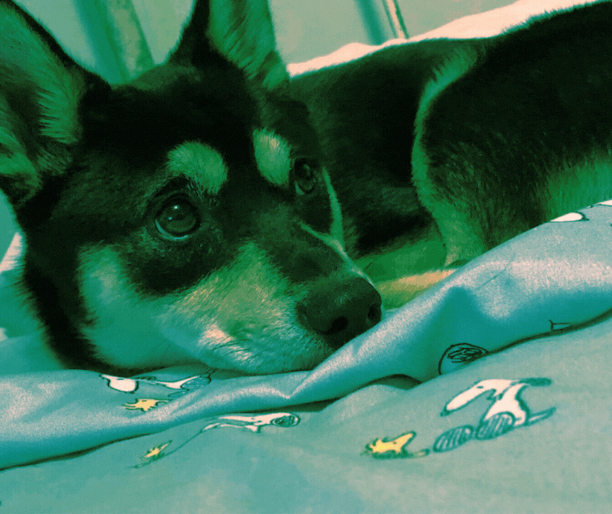
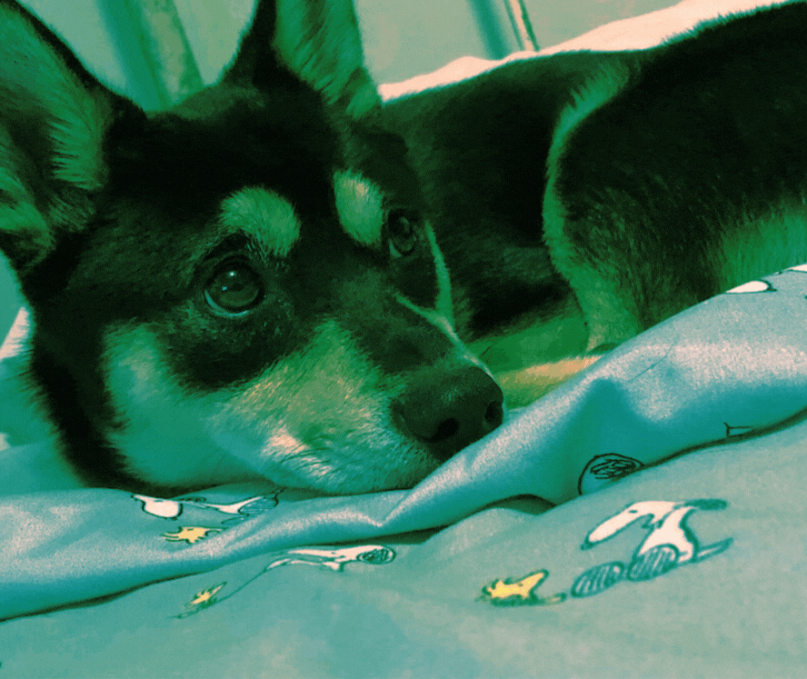
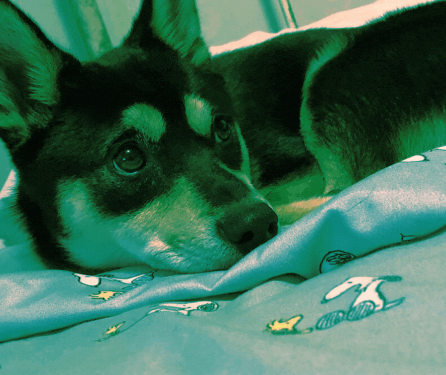
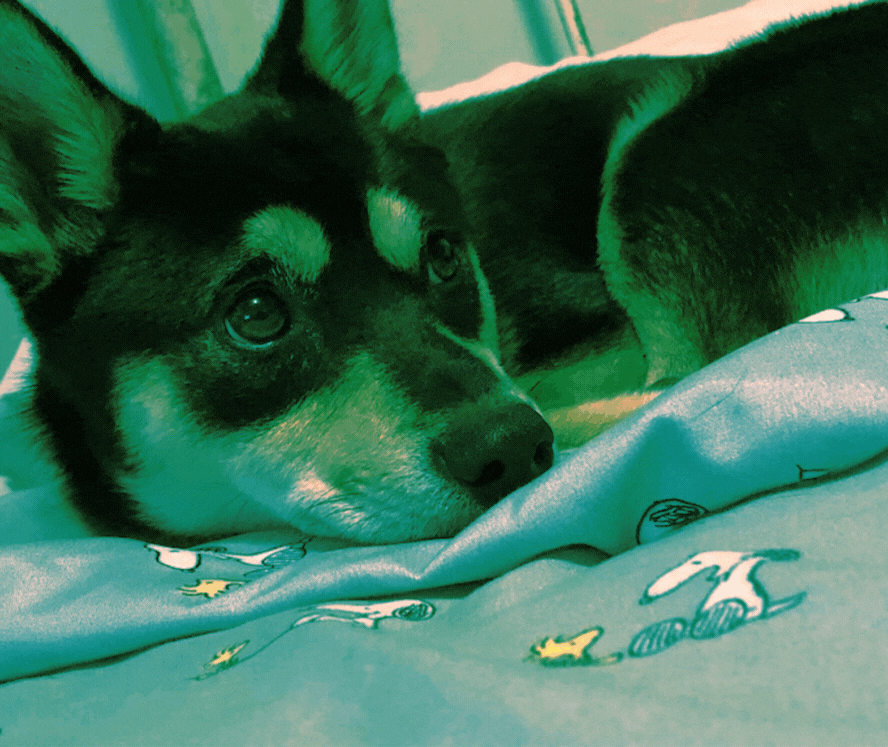

This is the chill page. Phoebe uses a variety of subscription based apps for a wide range of programs she likes to watch. The shows displayed on this page are on Phoebe's bookmarked lists and watches them on all streaming devices like her tv, mobile, or desktop.
Crunchyroll and Max are Phoebe's two most used apps to find content to watch. She has a range of genres she likes to watch. More than likely Phoebe usually watches comfort shows she's watched a lot before or something that makes her laugh. Phoebe tends to browse through many apps and finds shows or movies that keeps her engaged through plot twists or appealing character developments.
Phoebe is a variety gamer and plays different genres of games through consoles and pc. She finds joy through games that allow the player to create and customize their characters or create environments like an entire island on Animal Crossing New Horizons on Nintendo Switch. Displayed is a link also for a tier list of Animal Crossing Villagers that is updated every month and voted by the Animal Crossing community which Phoebe participates in. Phoebe also plays FPS games very casually grouped up with friends or cousins, and for her it's nice to have that adrenaline rush from gaming at times to occupy some time while online as well.